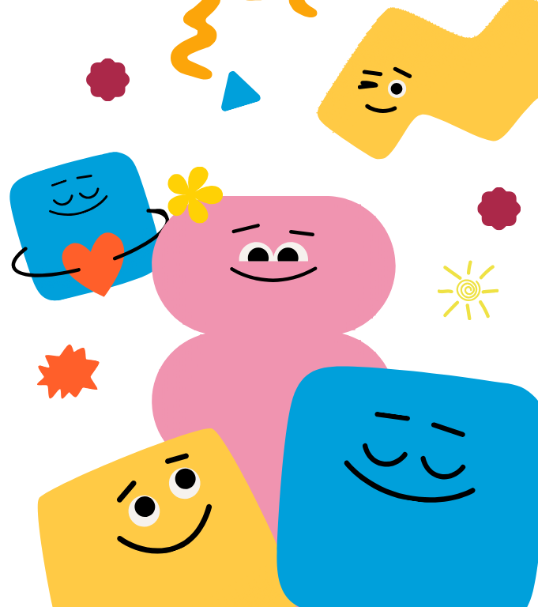
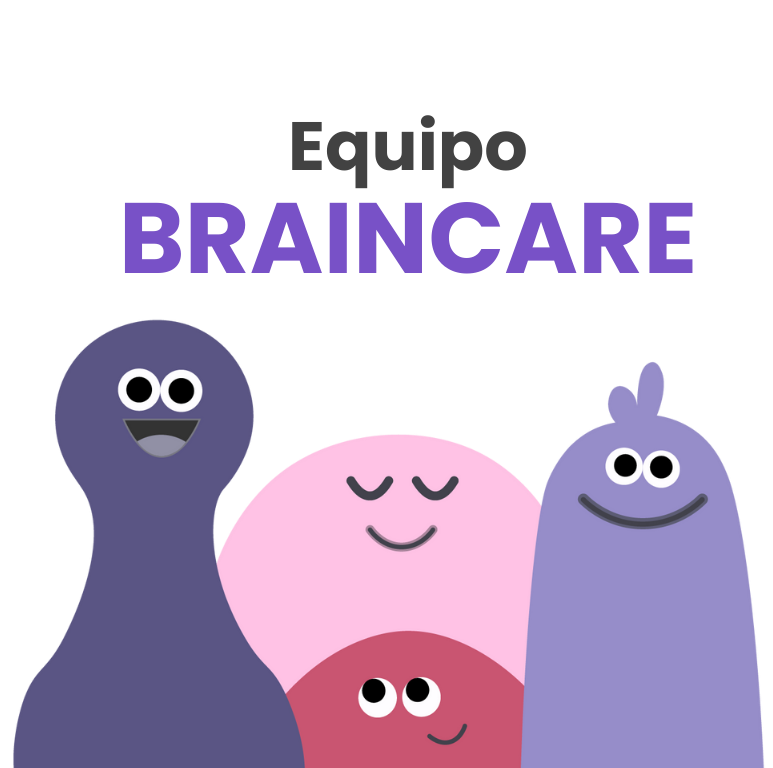
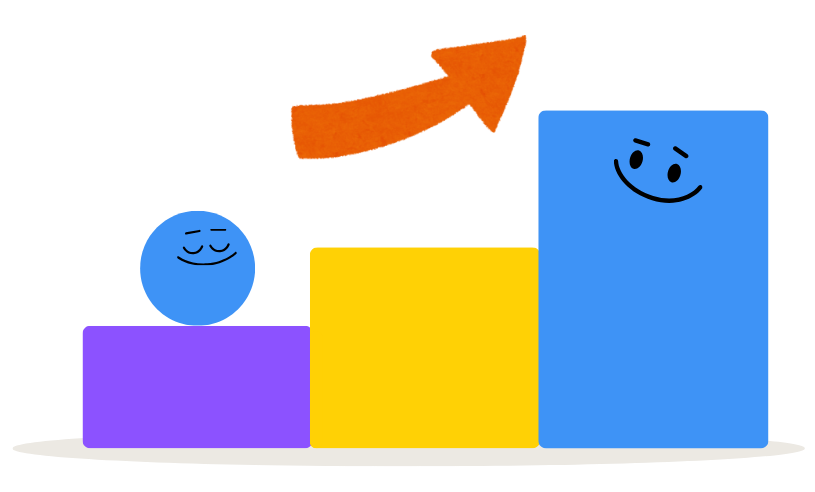

¿Porque Somos Braincare?
Aquí puedes colocar todo el texto que necesites. Este contenido se ajustará automáticamente al espacio disponible mientras mantiene la imagen de la derecha en su lugar.
Aquí puedes colocar todo el texto que necesites. Este contenido se ajustará automáticamente al espacio disponible mientras mantiene la imagen de la derecha en su lugar.

Braincare surgió como idea de proyecto para el evento de CREA-J. Pero el equipo de trabajo quería llevarse lo que aprendían con ellos. Andy y Rich, junto con un pequeño equipo, decidieron hacer que las técnicas de Andy estuvieran disponibles en línea, para que más personas pudieran experimentar los beneficios de la meditación en cualquier momento y lugar. Y así fue que Headspace se convirtió en lo que conocemos hoy: meditaciones guiadas, animaciones, artículos y videos, todos con el estilo característico de Headspace.

BrainCare tiene una sola misión y es promover la salud mental en personas desde los 12 años hasta los 80 años de edad, a través de una plataforma digital accesible que brinde información confiable, herramientas de apoyo emocional y espacios seguros para la expresión personal.

Nuestra visión es convertirnos en el principal referente en El Salvador para la salud mental, liderando con una solución innovadora, educativa y humana que se enfoque en la prevención y atención temprana de los trastornos mentales, y que contribuya a desestigmatizar el cuidado emocional y a construir una sociedad más consciente y empática.

El departamento psicopedagógico del colegio don Bosco se compone de 4 psicólogos para las áreas en las cuales se especializa el colegio y centro escolar San Juan Bosco(parvularia, educación básica, tercer ciclo, bachillerato). De igual forma cuenta con el servicio de aulas de terapia del aprendizaje contando con 3 terapistas especializadas.

Licenciado en psicología graduado de la Universidad Tecnológica de El Salvador con pre especialización en intervención psicoterapéutica en psicología clínica, posgrado en marketing digital, docente universitario, con experiencia en recursos humanos, psicología clínica y asistencia psicosocial, escritor de literatura psicológica, investigador de historia con formaciones en educación en docencia superior, atención psicológica en adicciones por parte de FOSALUD, formación en ley crecer juntos, diplomado en evaluación de test psicológico para el área clínica. Actualmente se desempeña como psicólogo educativo para el área de tercer ciclo.
Licenciada en psicología graduada de la universidad tecnológica de El Salvador cuenta con pre especialización en recursos humanos como también formación en áreas como intervención en abuso de sustancias por parte de la universidad tecnológica, intervenciones psicológicas en prevención y abuso de violencia de género, evaluación neuropsicológica para el diagnóstico clínico, primeros auxilios psicológicos y cursos en neuro plasticidad y estrategias educativas para el desarrollo del aprendizaje, psicología clínica y reestructuración cognitiva por parte de la Universidad Nacional de El Salvador. Actualmente se desempeña como psicóloga educativa de nivel parvularia y educación básica, también como psicóloga clínica e instrucción de catedra universitaria.
Licenciada en psicología graduada de la universidad Francisco Gavidia cuenta con curso de formación pedagógica para profesionales universitarios de la Universidad de El Salvador, diplomado en valores morales de la universidad católica de occidente, avalada para ejercer la profesión en psicología en New York, formada en primeros auxilios, formación en uso y gestión de Google classroom - Google suite for education, diplomado en áreas de neurociencias. Cuenta con experiencia en psicóloga en el área de formación profesional, psicología educativa, docente de bachillerato para el área de orientación para la vida, ha participado en el proceso de orientación vocacional y selección de personal, área de atención clínica.
Licenciado en psicología graduado de la universidad Francisco Gavidia con especialización en técnicas y herramientas para la profesión en psicología cuenta con diplomados en áreas como herramientas para construir un aula inclusiva y efectiva de la universidad católica de argentina, técnicas de intervención psicológica de FUNPRES, formación en ley crecer juntos. Cuenta con experiencia en área de psicológica clínica y educativa en los niveles de primaria, tercer ciclo y bachillerato.